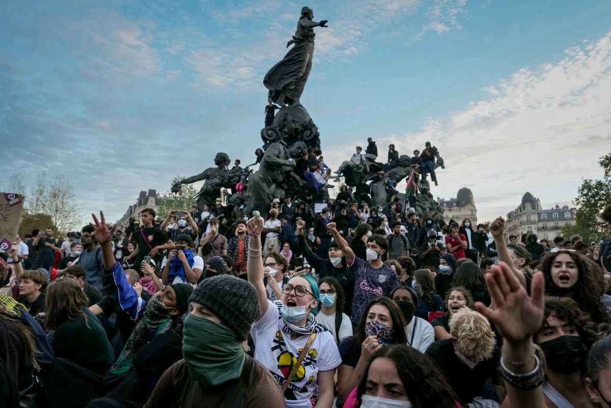

Greves, escolas bloqueadas e juros em alta expõem crise ampla na França
Protestos estudantis reuniram cerca de 260 mil pessoas na terça, segundo o governo; mercados temem pelas contas públicas a meses da eleição presidencial.

A França atravessa uma sucessão de turbulências: servidores em greve, escolas secundárias com barricadas, portos bloqueados, impasse orçamentário e juros dos títulos públicos em alta, descreve reportagem do O Globo. Para analistas, os episódios têm raiz comum na dificuldade de duas décadas do país em financiar o Estado, agravada pelo custo dos empréstimos, pela alta dos combustíveis e pela incerteza sobre a sucessão de Emmanuel Macron, prevista para a próxima primavera europeia.
Os protestos de estudantes de 15 a 18 anos — contra o subfinanciamento das escolas, a carga horária e salas não adaptadas às mudanças climáticas — viraram a face mais visível da crise. Só na terça-feira (6), segundo o governo, cerca de 260 mil pessoas foram às ruas em uns 30 municípios, 56 mil delas em Paris, e cerca de 1.800 escolas foram parcial ou totalmente bloqueadas; as entidades estudantis falam em 450 mil manifestantes.
Desde o fim de setembro, o balanço oficial registra 215 estudantes, 85 educadores e 715 policiais feridos e mais de 6.500 detidos. O primeiro-ministro Sébastien Lecornu anunciou a suspensão de meio período das aulas no ensino médio entre quarta e sexta-feira. Nos mercados, investidores reduzem a exposição a ativos franceses, preocupados com o déficit e com pesquisas que mostram a candidata de extrema direita Marine Le Pen vencendo todos os rivais.